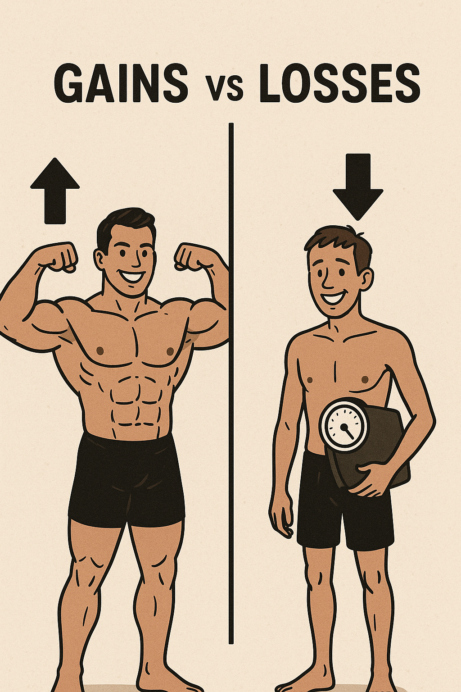

Gains vs Losses, Schedule it
If you’ve ever tried to cut fat and gain muscle at the same time, you’re not alone. It seems logical: train hard, eat clean, and you’ll get leaner and more muscular, right?
But the truth, according to science and physiology, is more complicated.
Here’s why, most of the time, trying to gain muscle while losing fat is like trying to drive with one foot on the gas and the other on the brake — and when it does work, it’s usually under special conditions.
The Science: Why It’s Biologically Conflicting
To understand why losing fat and building muscle don’t typically happen at the same time, we need to look at energy balance and muscle protein synthesis (MPS).
1. Fat Loss Requires a Caloric Deficit
- Fat is stored energy. To lose fat, you need to burn more calories than you consume — a caloric deficit.
- This forces your body to tap into stored energy (body fat) to make up the difference.
2. Muscle Gain Requires a Caloric Surplus
- Building muscle requires not just hard training, but also extra energy and nutrients.
- Muscle protein synthesis is energy-intensive. To build new tissue, your body needs excess nutrients, especially amino acids and sufficient calories.
So you can’t be in a deficit and surplus at the same time. This is the core biological conflict.
Muscle Building is Anabolic. Fat Loss is Catabolic.
- Anabolism = building (muscle gain)
- Catabolism = breaking down (fat loss)
When you're cutting calories, your body shifts into a catabolic state — not ideal for muscle growth. And if you’re trying to build, your body needs to be in an anabolic state with enough fuel.
In essence:
- Losing fat requires breaking down tissue.
- Building muscle requires creating new tissue.
Are There Exceptions?
Yes — and they’re important:
- Beginners: New lifters often experience “newbie gains.” Their bodies are so untrained that almost any stimulus causes both fat loss and muscle gain, even in a mild deficit.
- Overweight Individuals: They have ample energy stored in body fat, which the body can use to support muscle growth even while in a deficit.
- Detrained Athletes: Someone who previously built muscle and took time off can regain muscle quickly (muscle memory), even while cutting fat.
- High-Protein Diet + Resistance Training: Some advanced athletes may maintain or slightly build muscle while cutting — but this requires optimized training, high protein intake (~1g per lb of bodyweight), excellent sleep, and very slow fat loss.
Why Chasing Both Often Backfires
Trying to do both at once often leads to:
- Not enough calories to build muscle
- Not enough deficit to burn fat
- Frustration due to minimal results in either direction
You might maintain your current muscle mass (a good outcome during a cut), but building new muscle is rare unless you're in one of the exception groups.
So What Should You Do Instead?
Use phases — this is how professional athletes and bodybuilders do it:
1. Cutting Phase
- Goal: Lose fat, maintain muscle
- Approach: Caloric deficit, high protein, strength training
2. Bulking (Muscle-Building) Phase
- Goal: Gain muscle with minimal fat
- Approach: Caloric surplus, progressive overload, recovery focus
This approach is called body recomposition — but done over time, not all at once.
Final Takeaway
Trying to build muscle and lose fat at the same time is like trying to pour and drain a bucket at once. Yes, there are edge cases where it can work — but for most people, it’s best to focus on one goal at a time.
Focus = faster results.
Build muscle in one season. Cut fat in the next.
It’s not flashy, but it’s how real transformation happens.
Reflection Questions
- Am I trying to do too much at once in my training?
- Would I make faster progress if I chose one focus — cutting or bulking — for the next 8–12 weeks?
Action Steps
- Decide: Are you primarily trying to lean out or build muscle? Choose one for the next phase.
- Track your intake using a calculator or app to ensure you’re in the right energy balance.
- Train with intent: Lift heavy, focus on progressive overload, and don’t overdo cardio if bulking.
- Re-evaluate every 4–6 weeks and adjust based on your results.